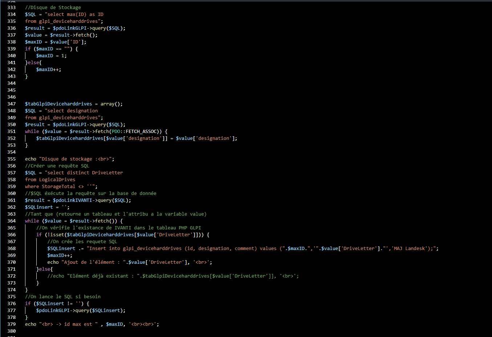
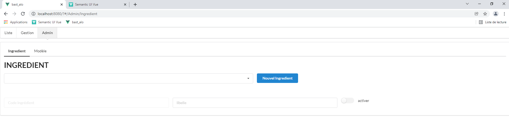
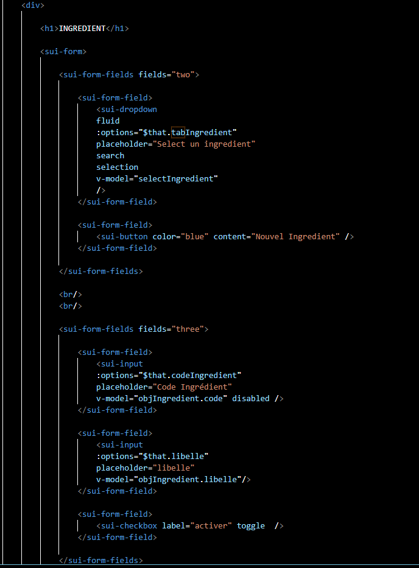
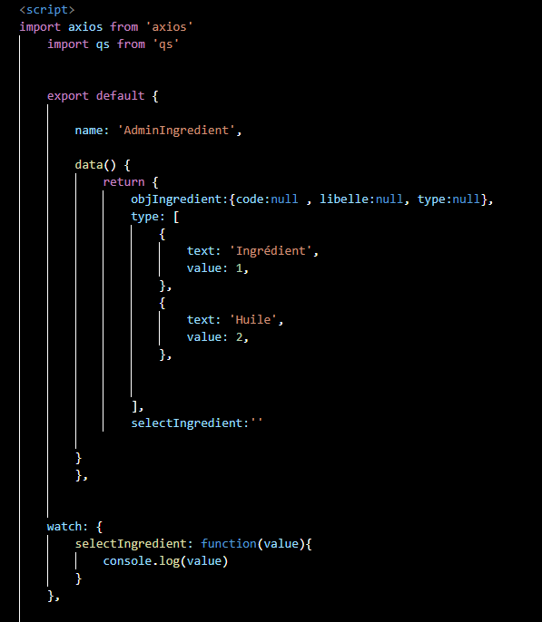

La Catacarte
La Catacarte
Porte follio Evan Fornarelli
Bienvenu, ce porte follio a pour but de parler de mon experience acquise au cours de mon bts , comme mes projets ou mes stages
CV


Le BTS SIO
C'est quoi ?
Le Brevet de Technicien Supérieur aux Services Informatiques aux Organisations, s'adresse à ceux qui souhaitent se former en deux ans aux métiers d'administrateur réseau ou de développeur. Pour par la suite intégrer directement le marché du travail ou continuer des études, dans le domaine de l'informatique. Celui ci a en effet la particularité de se scindé en deux groupe , SLAM ainsi que SISR.
SISR
L’acronyme SISR signifie « Solutions d’infrastructure, systèmes et réseaux ». L’option SISR est destinée aux étudiants qui s’orientent vers les métiers liés à la conception et la maintenance d’infrastructures réseaux. Assurer la sécurité, la maintenance et l’installation des réseaux et des équipements informatiques font partie des principales missions des futurs administrateurs, techniciens ou pilotes d’exploitation.
SLAM
Le signe SLAM signifie « Solutions Logicielles et Applications Métier ». L’option SLAM est destinée aux étudiants qui s’orientent vers les métiers liés à la conception et la maintenance de programmes applicatifs. Grâce à des cours spécifiques, les diplômés seront capables de gérer un parc informatique ou d’administrer un réseau au sein d’une entreprise. Ils pourront également gérer l’intégration, la sécurisation et la configuration des serveurs, mais aussi des postes clients et des équipements d’interconnexion.
Veille Technologique
Veille sur la réalité virtuelle
IciMon stage de 1er année
Présentation générale
Lors de ma première année, j’ai pu effectuer mon stage au sein de l'entreprise Daregal Formation durant 6 semaines (Du 25 Mai au 2 Juillet 2021). Ce stage m'a apporté beaucoup pour mon expérience professionnelle, comme pour le savoir-être, la tenue en entreprise ou encore le fonctionnement de l'entreprise.
Présentation de l'entreprise
Darégal est une entreprise française spécialisée dans la culture et la transformation d'herbes aromatiques, notamment surgelées, qui a évolué et innové au fil des décennies depuis 1887 et a acquis une place de leader international, tout en restant une entreprise familiale.
Contexte du projet
A mon arrivé dans le service informatique, Mon tuteur ma présenté les différente applications utilisé pour gerer l'entreprise (dont certaine qu'il a réalisé lui même), puis ma ensuite montré la tache a réalisé pendant mon stage. Etant donné que le service informatique recréait les différentes applications en les optimisant et refaisant l'interface. J'ai donc recréer le script d'une application plus optimiser et complet que l'ancien.
Mon projet
J'ai donc réalisé un script en PHP permettant de récupérer les données des appareils de l'entreprise comme le nom de l'appareil ou leurs modèles
Par exemple ici un extrait de code qui récupere le disque de stockage.
Le script récupère les informations des appareils a l'aide de requête SQL. Puis les insert dans une application interne a l'entreprise permettant de gérer le parc informatique.
Je ne peux hélas pas montré le resultat car certaine données sensible apparaissent sur l'écrans
Mon stage de 2em année
Présentation générale
Lors de ma deuxième année, j’ai pu ré-effectuer mon stage au sein de l'entreprise Daregal Formation durant 6 semaines (Du 3 Janvier au 12 Février 2022). Grace a ce stage j'ai pu en apprendre d'aventage pour travailler comme par exemple utiliser un workflow .
Contexte du projet
A mon arrivé, mon tuteur ma charger de m'occuper d'une application interne a l'entreprise , j'ai donc pu créer pendant mon stage une section dans l'application .
Mon Projet
Cette section que j'ai créer permet de lister les différents ingrédients pour afficher leurs informations (code et libelle) mais aussi pouvoir modifier ces informations
L'interrupteur "activé" permet de decider si l'ingrédient est actif ou non , car l'entreprise ne supprime pas les données de sa base de données.
 